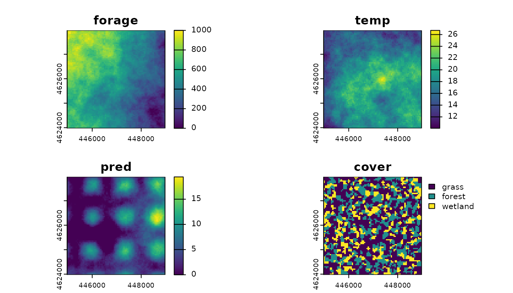
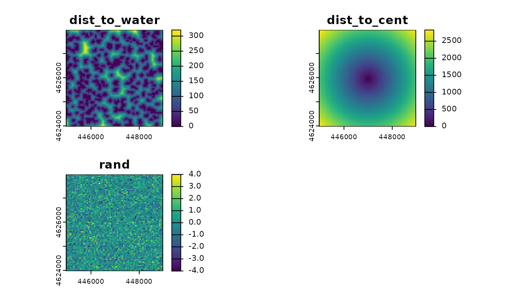

Background
Used-habitat calibration plots (UHC plots) are a graphical method for evaluating the calibration of a fitted HSF or (i)SSF model. The method uses a combination of parametric (to account for parameter uncertainty) and empirical bootstrapping to identify the distribution of used habitat, conditional on the fitted model and a test dataset. It can be used to identify problems in model specification, such as missing predictors and misspecified functional forms (e.g., linear rather than quadratic terms). For more details, see Fieberg et al. (2018).
Implementation in amt
We currently have an implementation of UHC plots in amt
for objects of class fit_logit and glm (HSFs)
and fit_clogit (iSSFs). The approach for both models is
similar, making use of generic functions with appropriate methods
depending on the class.
General workflow
For either an HSF or (i)SSF, the workflow is as follows:
- Prepare data for analysis
- Split data into training and testing datasets.
- Use training dataset to fit candidate model(s) [HSF or (i)SSF].
- Prepare UHC plots by passing the fitted model and the
testing data to the function
prep_uhc(). - Create the UHC plots by calling
plot()on the object returned in (4).
Examples
amt contains simulated habitat data. This was once
stored as a RasterStack, but with conversion from
raster to terra, it is no longer possible to
store a SpatRaster as *.rda (the default
binary format for included data). Instead, uhc_dat is a
data.frame that can be converted to a
SpatRaster with terra::rast(). For
example:
hab <- rast(uhc_dat, type = "xyz", crs = "epsg:32612")amt also contains location data simulated under (1) an
HSF and (2) an iSSF to demonstrate the UHC plot workflow.
The SpatRaster (hab, once converted)
contains 7 layers:
-
forage: forage biomass in g/m2 (a resource) -
temp: mean annual temperature in °C (a condition) -
pred: predator density in predators/100 km2 (a risk) -
cover: land cover categories (1 = grassland, 2 = forest, 3 = wetland) -
dist_to_water: distance to the wetland category in m (does not affect selection) -
dist_to_cent: distance to the center of the raster in m (does not affect selection in HSF; avoidance of large distance to center in iSSF) -
rand: random integer from -4 to 4 (does not affect selection)
Note that temp, a condition, is modeled with a quadratic
term in the simulations.
True parameter values under the simulation are in the description for
each dataset, i.e., ?uhc_hsf_locs and
?uhc_issf_locs.
# Load all the packages we need
library(amt)
library(dplyr)
library(terra)
library(sf)
data(uhc_hab)
hab <- rast(uhc_hab, type = "xyz", crs = "epsg:32612")
# Convert "cover" layer to factor
levels(hab[[4]]) <- data.frame(id = 1:3,
cover = c("grass", "forest", "wetland"))
# Affect habitat selection in simulation
plot(hab[[1:4]])
# Do not affect habitat selection in simulation
plot(hab[[5:7]])
HSF Example
The following is a demonstration of the workflow for an HSF.
Prepare data
First, we combine steps (1) and (2) by splitting into train/test data and then generating available locations and attributing with covariates and model weights.
# Load data
data(uhc_hsf_locs)
# Split into train (80%) and test (20%)
set.seed(1)
uhc_hsf_locs$train <- rbinom(n = nrow(uhc_hsf_locs),
size = 1, prob = 0.8)
train <- uhc_hsf_locs[uhc_hsf_locs$train == 1, ]
test <- uhc_hsf_locs[uhc_hsf_locs$train == 0, ]
# Available locations (entire raster extent)
avail_train <- random_points(st_as_sf(st_as_sfc(st_bbox(hab))),
n = nrow(train) * 10)
avail_test <- random_points(st_as_sf(st_as_sfc(st_bbox(hab))),
n = nrow(test) * 10)
# Combine with used
train_dat <- train |>
make_track(x, y, crs = 32612) |>
mutate(case_ = TRUE) |>
bind_rows(avail_train) |>
# Attach covariates
extract_covariates(hab) |>
# Assign large weights to available
mutate(weight = case_when(
case_ ~ 1,
!case_ ~ 5000
))
test_dat <- test |>
make_track(x, y, crs = 32612) |>
mutate(case_ = TRUE) |>
bind_rows(avail_test) |>
# Attach covariates
extract_covariates(hab)
# Note 'weight' column not created for test data
# (we assume all variables in test are candidate habitat variables)Fit model(s)
Now we move onto step (3), where we fit candidate models. We’ll start
with a model that has an incorrect formulation. We will leave the
quadratic term out for temp and leave cover
out of the model.
hsf_wrong <- glm(case_ ~ forage + temp + pred,
data = train_dat, family = binomial(), weights = weight)We will also fit the correct model, using the structure used to generate the data.
Prepare UHC plot data
Next, onto step (4), where we use prep_uhc() to prepare
the UHC data. This is the function that does most of the heavy lifting
(i.e., the boostrapping).
Plot UHC plots
Finally, we are ready to plot (step 5). First, the wrong model.
plot(uhc_hsf_wrong)


Note that the used proportions for cover == "forest" and
cover == "wetland" also fall above and below the modeled
envelope, respectively. These are our clues that the model is
incorrectly specified.
Note that dist_to_water also shows a mismatch between
observed and predicted values. If we didn’t already know that this was
an unimportant variable, we might consider including it in our model.
However, as we will see in the next set of plots, the correct model
specification does correctly capture dist_to_water
without needing to include it in the model.
Now, the right model.
plot(uhc_hsf_right)


We can see these issues have been resolved for our cover
variables, indicating that our “right” model is, in fact, better
calibrated than hsf_wrong. Additionally, there is no longer
an issue with dist_to_water, confirming that we do not need
to include it in the model.
Note that with a large number of bootstrap samples, the plots are quite complex and can take multiple seconds to render. If you are working with many candidate variables, this makes examining all the plot quite slow. We have included a few potential solutions to this problem:
- First, you can plot just a single variable, by subsetting the
uhc_dataobject by either integers or the names of the variables. - Second, you can convert the many lines to a single polygon representing a confidence enevelope (with a confidence level of your choice).
Subsetting:


# By names (vector of >1 names also allowed)
plot(uhc_hsf_right["cover"])
Envelope:
# Coerce to data.frame
df <- as.data.frame(uhc_hsf_right)
# Create confidence envelopes (95% and 100%)
env <- conf_envelope(df, levels = c(0.95, 1))
# Plot
plot(env)


iSSF Example
The following is a demonstration of the workflow for an iSSF.
Prepare data
First, we combine steps (1) and (2) by splitting into train/test data and then generating available locations and attributing with covariates and model weights.
# Load data
data(uhc_issf_locs)
# Format as steps
steps <- uhc_issf_locs |>
make_track(x, y, t, crs = 32612) |>
steps()
# Split into train (80%) and test (20%)
set.seed(1)
steps$train <- rbinom(n = nrow(steps),
size = 1, prob = 0.8)
train <- steps[steps$train == 1, ]
test <- steps[steps$train == 0, ]
# Generate available steps, attribute
train_dat <- train |>
random_steps(n_control = 15) |>
# Attach covariates
extract_covariates(hab) |>
# Additional movement parameters
mutate(log_sl_ = log(sl_),
cos_ta_ = cos(ta_)) |>
# Drop 'train' column
dplyr::select(-train) |>
# Get rid of any NAs (sometimes available steps fall outside of raster)
na.omit()
test_dat <- test |>
random_steps(n_control = 15) |>
# Attach covariates
extract_covariates(hab) |>
# Additional movement parameters
mutate(log_sl_ = log(sl_),
cos_ta_ = cos(ta_)) |>
# Drop 'train' column
dplyr::select(-train) |>
# Get rid of any NAs (sometimes available steps fall outside of raster)
na.omit()Fit model(s)
Now we move onto step (3), where we fit candidate models. We’ll start with a model that has an incorrect formulation.
issf_wrong <- fit_issf(train_dat,
case_ ~
# Habitat
forage +
# Movement
sl_ + log_sl_ + cos_ta_ +
# Strata
strata(step_id_), model = TRUE)We will also fit the correct model, using the structure used to generate the data.
Prepare UHC plot data
Next, onto step (4), where we use prep_uhc() to prepare
the UHC data. This is the function that does most of the heavy lifting
(i.e., the bootstrapping).


Additional Methods
There is also a function to coerce a uhc_data object to
data.frame. This would be useful, for example, if you wish
to create a custom plot with ggplot2 or another
package.
# Structure of `uhc_data` object
str(uhc_issf_right, 1)
#> List of 6
#> $ orig:List of 7
#> $ samp:List of 7
#> $ vars: chr [1:7] "forage" "temp" "pred" "cover" ...
#> $ lims:List of 7
#> $ type: Named chr [1:7] "numeric" "numeric" "numeric" "factor" ...
#> ..- attr(*, "names")= chr [1:7] "forage" "temp" "pred" "cover" ...
#> $ resp: chr "case_"
#> - attr(*, "class")= chr [1:2] "uhc_data" "list"
# Coerce to data.frame
head(as.data.frame(uhc_issf_right), 10)
#> var x y dist iter label
#> 1 forage 239.4147 1.116098e-06 U NA <NA>
#> 2 forage 240.9079 1.268620e-06 U NA <NA>
#> 3 forage 242.4012 1.436511e-06 U NA <NA>
#> 4 forage 243.8944 1.627104e-06 U NA <NA>
#> 5 forage 245.3876 1.838193e-06 U NA <NA>
#> 6 forage 246.8809 2.068999e-06 U NA <NA>
#> 7 forage 248.3741 2.320488e-06 U NA <NA>
#> 8 forage 249.8673 2.599519e-06 U NA <NA>
#> 9 forage 251.3606 2.907204e-06 U NA <NA>
#> 10 forage 252.8538 3.239966e-06 U NA <NA>